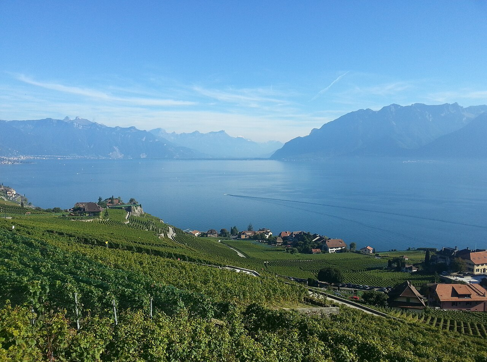

-

Париж Париж виріс із поселення кельтського племені в римське місто Лютецію, а згодом став столицею Франції та релігійно-освітнім центром Європи. Зазнавши грандіозної перебудови у XIX столітті з появою широких бульварів та Ейфелевої вежі, він зберіг свою велич і перетворився на світову столицю культури, моди та туризму.
-

Швейцарія Швейца́рія (також Швайцáрія; нім. die Schweiz, фр. la Suisse, італ. Svizzera, ромш. Svizra), офіційна назва Швейца́рська Конфедера́ція — держава, розташована на стику Західної, Центральної та Південної Європи. Федеративна республіка, що складається з 26 кантонів, з федеральною владою у Берні.
-
Ірландія Ірла́ндія (ірл. Éire, англ. Ireland), також знана як Республіка Ірландія — держава в північно-західній Європі, що охоплює 26 з 32 графств (5/6 території) острова Ірландія. Столиця — місто Дублін.